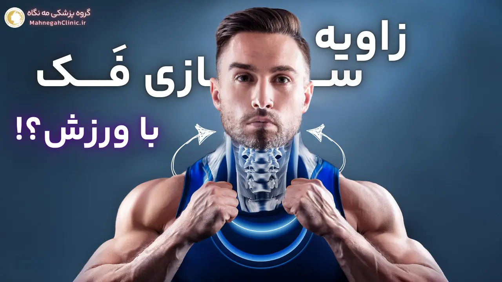
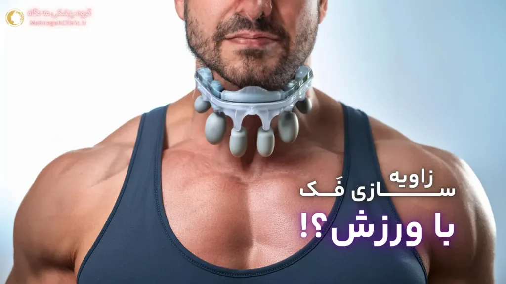
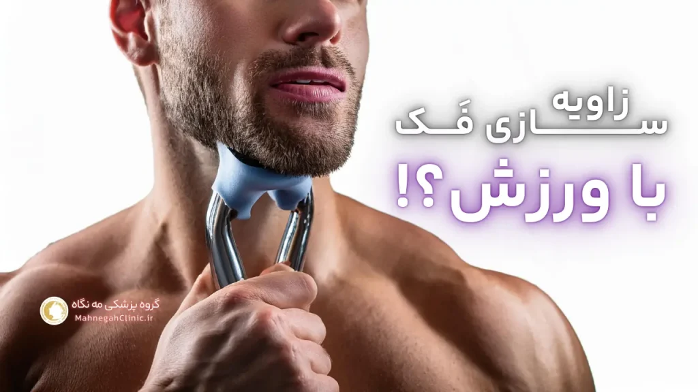
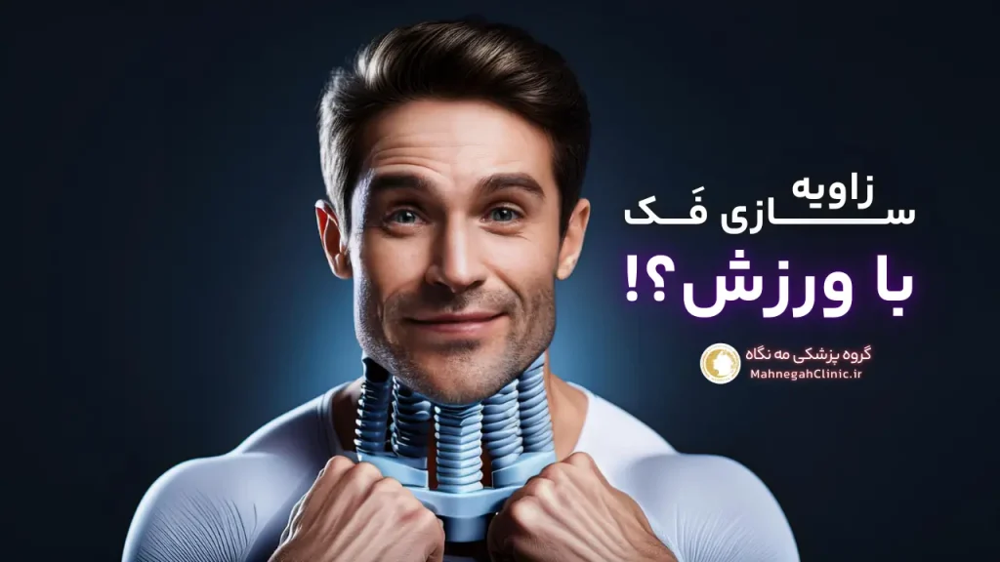

خانه / مجله / زاویه سازی فک
ورزش برای زاویه سازی فک مردان: 8 اصل اساسی

1. زاویه فک مردان: نمادی از جذابیت و اعتماد به نفس
زاویه سازی فک مردان با ورزش میتواند موجب داشتن یک زاویه فک مشخص و برجسته گردد که در فرهنگهای مختلف به عنوان نشانهای از جذابیت مردانه و اعتماد به نفس بالا شناخته میشود. این حالت زاویه دار، به خط فک تیز و مشخصی اشاره دارد که از گوش تا چانه امتداد مییابد و به چهره مردان، ظاهری قدرتمند و جذاب میبخشد.
این ویژگی، نه تنها بر زیبایی چهره تأثیر میگذارد، بلکه میتواند نشاندهنده سلامت عمومی و سطح تستوسترون فرد نیز باشد. به همین دلیل، بسیاری از مردان به دنبال راههایی برای ساختن زاویه فک و بهبود ظاهر چهره خود هستند.
چرا زاویه فک برای مردان مهم است؟
زاویه فک، نقشی اساسی در ایجاد تعادل و تناسب در چهره مردان ایفا میکند.
یک فک زاویه دار، میتواند ویژگیهای دیگر چهره را برجستهتر کرده و به طور کلی، ظاهری جذابتر و مردانهتر ایجاد کند. علاوه بر این، زاویه فک میتواند بر اعتماد به نفس فرد تأثیر بگذارد.
مردانی که از ظاهر چهره خود راضی هستند، اغلب اعتماد به نفس بیشتری دارند و در تعاملات اجتماعی خود موفقتر عمل میکنند.
تأثیر زاویه فک بر جذابیت چهره مردانه
مطالعات نشان دادهاند که زاویه فک، یکی از مهمترین عوامل جذابیت چهره مردانه از نظر زنان است. یک فک زاویه دار، میتواند چهره را جوانتر، سالمتر و قدرتمندتر نشان دهد.
این ویژگی، به ویژه در فرهنگهای غربی، به عنوان نشانهای از مردانگی و جذابیت جنسی تلقی میشود. به همین دلیل، بسیاری از مردان به دنبال راههایی برای زاویه سازی فک و بهبود ظاهر چهره خود هستند.
2. ورزش برای زاویه سازی فک مردان: راهی طبیعی و کم هزینه
اگر به دنبال روشی طبیعی، کمهزینه و بدون عوارض برای زاویه سازی فک خود هستید، ورزش بهترین گزینه است. ورزش برای زاویه سازی فک مردان، با تقویت و افزایش حجم عضلات فک و صورت، به شما کمک میکند تا به تدریج به زاویه فک مردانه دلخواه خود برسید.
این روش، علاوه بر بهبود ظاهر چهره، میتواند به بهبود عملکرد عضلات فک در جویدن و صحبت کردن نیز کمک کند.
H3: معرفی تمرینات مؤثر برای زاویه سازی فک
تمرینات زاویه سازی فک، شامل حرکات متنوعی است که بر روی عضلات مختلف فک و صورت تمرکز دارند. برخی از این تمرینات عبارتند از:
- تمرینات مقاومتی: این تمرینات با ایجاد مقاومت در برابر حرکت فک، به تقویت عضلات آن کمک میکنند.
- تمرینات کششی: این تمرینات با افزایش انعطافپذیری عضلات فک، به بهبود حرکت و عملکرد آنها کمک میکنند.
- تمرینات ایزومتریک: این تمرینات با حفظ انقباض عضلات فک در یک موقعیت خاص، به تقویت و افزایش حجم آنها کمک میکنند.
H3: مزایای ورزش در مقایسه با روشهای دیگر
زاویه سازی فک با ورزش، در مقایسه با روشهای دیگر مانند تزریق ژل یا جراحی، دارای مزایای بسیاری است، از جمله:
- طبیعی بودن: ورزش، روشی طبیعی و بدون عوارض برای زاویه سازی فک است و نیازی به استفاده از مواد شیمیایی یا انجام جراحی ندارد.
- کم هزینه بودن: ورزش، در مقایسه با روشهای دیگر، بسیار کمهزینه است و نیازی به پرداخت هزینههای گزاف برای تزریق ژل یا جراحی ندارد.
- ماندگاری نتایج: نتایج حاصل از زاویه سازی فک با ورزش، در صورت ادامه تمرینات، ماندگارتر از روشهای دیگر هستند.
- بهبود عملکرد عضلات: ورزش، علاوه بر بهبود ظاهر چهره، به بهبود عملکرد عضلات فک در جویدن و صحبت کردن نیز کمک میکند.

3. تمرینات برتر برای زاویه سازی فک مردان
برای دستیابی به زاویه فک مردانه دلخواه، میتوانید از تمرینات متنوعی استفاده کنید. در ادامه، برخی از بهترین و مؤثرترین تمرینات برای زاویه سازی فک را به شما معرفی میکنیم:
تمرینات مقاومتی برای تقویت عضلات فک
- جویدن آدامس: جویدن آدامس، یکی از سادهترین و در دسترسترین تمرینات برای تقویت عضلات فک است. با جویدن آدامس به مدت حداقل 30 دقیقه در روز، میتوانید به تدریج عضلات فک خود را تقویت کنید.
- تمرین توپ فک: برای انجام این تمرین، به یک توپ کوچک و نرم نیاز دارید. توپ را بین دندانهای خود قرار داده و به آرامی آن را فشار دهید. این تمرین را در چند ست 10 تا 15 تایی تکرار کنید.
- تمرین مقاومت چانه: برای انجام این تمرین، دست خود را زیر چانه قرار داده و به آرامی سعی کنید دهان خود را باز کنید، در حالی که با دست خود مقاومت ایجاد میکنید. این تمرین را در چند ست 10 تا 15 تایی تکرار کنید.
تمرینات کششی برای بهبود انعطاف پذیری عضلات
- کشش گردن: سر خود را به آرامی به سمت چپ و راست بچرخانید و در هر موقعیت، چند ثانیه مکث کنید. این تمرین به کشش عضلات گردن و فک کمک میکند.
- کشش فک پایین: فک پایین خود را به آرامی به سمت جلو و عقب حرکت دهید و در هر موقعیت، چند ثانیه مکث کنید. این تمرین به کشش عضلات فک کمک میکند.
- باز کردن دهان: دهان خود را تا جایی که میتوانید باز کنید و چند ثانیه در این حالت بمانید. سپس، به آرامی دهان خود را ببندید. این تمرین به کشش عضلات فک و صورت کمک میکند.
4. برنامه تمرینی کامل برای زاویه سازی فک
برای دستیابی به بهترین نتایج در زاویه سازی فک، لازم است یک برنامه تمرینی منظم و کامل داشته باشید.
این برنامه باید شامل تمرینات متنوعی باشد که بر روی عضلات مختلف فک و صورت تمرکز دارند. در ادامه، یک برنامه تمرینی نمونه برای زاویه سازی فک مردان ارائه شده است:
تعداد تکرار و ستهای مناسب برای هر تمرین
- تمرینات مقاومتی: هر تمرین را در 3 ست 10 تا 15 تایی تکرار کنید.
- تمرینات کششی: هر تمرین را به مدت 30 ثانیه نگه دارید و 3 تا 5 بار تکرار کنید.
- تمرینات ایزومتریک: هر تمرین را به مدت 10 تا 15 ثانیه نگه دارید و 3 تا 5 بار تکرار کنید.
نکات مهم برای اجرای صحیح تمرینات
- گرم کردن: قبل از شروع تمرینات، عضلات فک و صورت خود را با حرکات کششی ملایم گرم کنید.
- تنفس صحیح: در طول تمرینات، به تنفس صحیح خود توجه کنید و از حبس نفس خودداری کنید.
- استراحت: بین ستها، به عضلات خود استراحت کافی بدهید.
- تدریجی بودن: تمرینات را به تدریج افزایش دهید و از انجام تمرینات بیش از حد سنگین خودداری کنید.
- مشاوره با پزشک: در صورت داشتن هرگونه مشکل یا درد در ناحیه فک یا صورت، قبل از شروع تمرینات با پزشک خود مشورت کنید.

5. تغذیه و سبک زندگی: عوامل مؤثر در زاویه سازی فک
علاوه بر ورزش، تغذیه و سبک زندگی نیز نقش مهمی در زاویه سازی فک و ساخت زاویه فک دارند. با رعایت یک رژیم غذایی سالم و متعادل و پرهیز از عادات غلط، میتوانید به بهبود ظاهر چهره و زاویه فک خود کمک کنید.
مواد غذایی مفید برای تقویت عضلات فک
- مواد غذایی غنی از کلسیم: کلسیم، یک ماده معدنی ضروری برای سلامت استخوانها و دندانها است و میتواند به تقویت عضلات فک نیز کمک کند. لبنیات، سبزیجات برگ سبز، و ماهیهای چرب، منابع خوبی از کلسیم هستند.
- مواد غذایی غنی از پروتئین: پروتئین، برای ساخت و ترمیم بافتهای عضلانی ضروری است. گوشت، مرغ، ماهی، تخم مرغ، حبوبات، و آجیل، منابع خوبی از پروتئین هستند.
- مواد غذایی غنی از ویتامین C: ویتامین C، به تولید کلاژن کمک میکند که برای سلامت پوست و عضلات مهم است. مرکبات، توت فرنگی، کیوی، و فلفل دلمهای، منابع خوبی از ویتامین C هستند.
- مواد غذایی غنی از منیزیم: منیزیم، به عملکرد صحیح عضلات کمک میکند. سبزیجات برگ سبز، آجیل، و دانهها، منابع خوبی از منیزیم هستند.
عادات غلطی که مانع زاویه سازی فک میشوند
- جویدن یک طرفه: جویدن غذا تنها با یک طرف فک، میتواند باعث عدم تعادل در عضلات فک و صورت شود و مانع زاویه سازی فک شود. سعی کنید غذا را با هر دو طرف فک خود بجوید.
- فشار دادن دندانها روی هم: فشار دادن دندانها روی هم، به خصوص در هنگام استرس، میتواند باعث تنش در عضلات فک و صورت شود و مانع زاویه سازی فک شود. سعی کنید از این عادت خودداری کنید و در صورت لزوم، از محافظ دندان استفاده کنید.
- مصرف بیش از حد الکل و سیگار: مصرف بیش از حد الکل و سیگار، میتواند باعث کاهش تولید کلاژن و تضعیف عضلات فک و صورت شود و مانع زاویه سازی فک شود. سعی کنید مصرف این مواد را محدود کنید.
- کم آبی بدن: کم آبی بدن، میتواند باعث کاهش حجم عضلات و افتادگی پوست شود و مانع زاویه سازی فک شود. روزانه مقدار کافی آب بنوشید.
6. زاویه سازی فک مردان با ژل: یک گزینه سریع و موقت
اگر به دنبال راهی سریع و بدون نیاز به تمرینات طولانی مدت برای زاویه سازی فک هستید، تزریق ژل زاویه سازی فک مردان میتواند یک گزینه مناسب باشد.
در این روش، با تزریق فیلرهای پوستی مانند هیالورونیک اسید به نواحی خاصی از فک و چانه، میتوان به سرعت زاویه فک را برجستهتر و مشخصتر کرد. این روش، به ویژه برای افرادی که به دنبال نتایج فوری هستند و یا زمان کافی برای ورزش ندارند، مناسب است.
مزایا و معایب زاویه سازی فک با ژل
زاویه سازی فک با ژل، مانند هر روش دیگری، دارای مزایا و معایبی است که باید قبل از تصمیمگیری در مورد آن، به دقت بررسی شوند:
- مزایا:
- نتایج فوری: بلافاصله پس از تزریق ژل، میتوانید تغییرات قابل توجهی در زاویه فک خود مشاهده کنید.
- دوره نقاهت کوتاه: این روش، نیازی به بستری شدن در بیمارستان یا استراحت طولانی مدت ندارد و شما میتوانید بلافاصله پس از تزریق به فعالیتهای روزمره خود بازگردید.
- قابل تنظیم بودن: میزان ژل تزریق شده و شکل زاویه فک، قابل تنظیم است و میتوانید با پزشک خود در مورد نتایج دلخواه خود صحبت کنید.
- معایب:
- موقتی بودن: نتایج زاویه سازی فک با ژل، موقتی هستند و بسته به نوع ژل استفاده شده، ممکن است بین 6 ماه تا 2 سال ماندگاری داشته باشند. پس از این مدت، نیاز به تزریق مجدد ژل خواهید داشت.
- عوارض جانبی: تزریق ژل، ممکن است با عوارض جانبی مانند تورم، کبودی، درد، و عفونت همراه باشد. این عوارض معمولاً خفیف هستند و پس از چند روز برطرف میشوند، اما در موارد نادر، ممکن است عوارض جدیتری نیز رخ دهد.
- هزینه: هزینه زاویه سازی فک با ژل، نسبت به ورزش، بالاتر است و نیاز به پرداخت هزینههای مربوط به تزریق و ژل دارید.
هزینه زاویه سازی فک با ژل
قیمت زاویه سازی فک مردان با ژل، به عوامل مختلفی مانند نوع و مقدار ژل استفاده شده، تجربه و تخصص پزشک، و موقعیت جغرافیایی کلینیک بستگی دارد.
به طور کلی، هزینه زاویه سازی فک با ژل، از چند صد هزار تومان تا چند میلیون تومان متغیر است. قبل از تصمیمگیری در مورد این روش، بهتر است با چند پزشک متخصص مشورت کنید و قیمت زاویه سازی فک را در کلینیکهای مختلف مقایسه کنید.

7. مقایسه ورزش و تزریق ژل برای زاویه سازی فک
هر دو روش ورزش و تزریق ژل میتوانند به زاویه سازی فک و بهبود ظاهر چهره کمک کنند، اما هر کدام دارای ویژگیها و مزایای خاص خود هستند. در ادامه، به مقایسه این دو روش میپردازیم تا به شما در انتخاب بهترین گزینه برای ساختن زاویه فک کمک کنیم.
بررسی اثربخشی و ماندگاری هر روش
- ورزش: ورزش، با تقویت و افزایش حجم عضلات فک و صورت، به تدریج به زاویه سازی فک کمک میکند. نتایج حاصل از ورزش، معمولاً پس از چند هفته یا چند ماه قابل مشاهده هستند و در صورت ادامه تمرینات، ماندگاری بیشتری دارند. با این حال، اثربخشی ورزش به شدت تمرینات، تغذیه، و عوامل ژنتیکی بستگی دارد و ممکن است برای همه افراد به یک اندازه مؤثر نباشد.
- تزریق ژل: تزریق ژل، روشی سریع و مؤثر برای زاویه سازی فک است و نتایج آن بلافاصله پس از تزریق قابل مشاهده هستند. با این حال، نتایج تزریق ژل موقتی هستند و بسته به نوع ژل استفاده شده، ممکن است بین 6 ماه تا 2 سال ماندگاری داشته باشند. پس از این مدت، نیاز به تزریق مجدد ژل خواهید داشت.
انتخاب بهترین روش با توجه به نیازها و بودجه
انتخاب بین ورزش و تزریق ژل برای زاویه سازی فک، به نیازها، اهداف، و بودجه شما بستگی دارد. اگر به دنبال روشی طبیعی، کمهزینه، و با نتایج ماندگار هستید، ورزش بهترین گزینه است.
اما اگر به دنبال نتایج فوری هستید و یا زمان کافی برای ورزش ندارید، تزریق ژل میتواند یک گزینه مناسب باشد. در هر صورت، قبل از تصمیمگیری نهایی، بهتر است با یک پزشک متخصص مشورت کنید و مزایا و معایب هر روش را به دقت بررسی کنید.
8. پاسخ به سوالات متداول درباره زاویه سازی فک مردان
در این بخش، به برخی از سوالات رایج درباره زاویه سازی فک مردان پاسخ میدهیم تا ابهامات شما را برطرف کنیم و به شما در انتخاب بهترین روش برای دستیابی به زاویه فک مردانه دلخواه کمک کنیم.
آیا ورزش به تنهایی برای زاویه سازی فک کافی است؟
بله، ورزش میتواند به تنهایی برای زاویه سازی فک کافی باشد، اما اثربخشی آن به عوامل مختلفی مانند شدت تمرینات، تغذیه، و عوامل ژنتیکی بستگی دارد. برای برخی افراد، ورزش ممکن است به تنهایی نتایج مطلوبی را به همراه داشته باشد، در حالی که برای برخی دیگر، ممکن است نیاز به ترکیب ورزش با روشهای دیگر مانند تزریق ژل باشد.
چه مدت طول میکشد تا نتایج ورزش قابل مشاهده باشند؟
مدت زمان لازم برای مشاهده نتایج ورزش برای زاویه سازی فک، به عوامل مختلفی مانند شدت تمرینات، تغذیه، و عوامل ژنتیکی بستگی دارد. به طور کلی، ممکن است چند هفته یا چند ماه طول بکشد تا تغییرات قابل توجهی در زاویه فک خود مشاهده کنید. برای دستیابی به بهترین نتایج، لازم است تمرینات را به طور منظم و مداوم انجام دهید و صبور باشید.
سایر سوالات متداول:
تزریق ژل ممکن است با کمی درد و ناراحتی همراه باشد، اما معمولاً قابل تحمل است و با استفاده از بیحسی موضعی، میتوانید درد را به حداقل برسانید.
تزریق ژل ممکن است با عوارض جانبی مانند تورم، کبودی، درد، و عفونت همراه باشد. این عوارض معمولاً خفیف هستند و پس از چند روز برطرف میشوند، اما در موارد نادر، ممکن است عوارض جدیتری نیز رخ دهد. قبل از تصمیمگیری در مورد این روش، بهتر است با پزشک خود در مورد عوارض احتمالی آن صحبت کنید.
بله، معمولاً میتوانید پس از تزریق ژل به فعالیتهای روزمره خود، از جمله ورزش، بازگردید. با این حال، بهتر است در روزهای اول پس از تزریق، از انجام تمرینات سنگین یا فعالیتهایی که باعث فشار زیادی بر روی فک میشوند، خودداری کنید.
برای پیدا کردن بهترین پزشک برای زاویه سازی فک، میتوانید از دوستان و آشنایان خود recommendations بگیرید، نظرات آنلاین بیماران را بخوانید، و با چند پزشک متخصص مشورت کنید. مطمئن شوید که پزشک انتخابی شما دارای تجربه و تخصص کافی در زمینه تزریق ژل است و از مواد با کیفیت و استاندارد استفاده میکند.
سخن پایانی
در پایان، به یاد داشته باشید که زاویه سازی فک، یک فرآیند تدریجی است و نیاز به صبر و پشتکار دارد. با رعایت یک برنامه تمرینی منظم، تغذیه سالم، و انتخاب روش مناسب با توجه به نیازها و بودجه خود، میتوانید به زاویه فک مردانه دلخواه خود برسید و اعتماد به نفس خود را افزایش دهید.